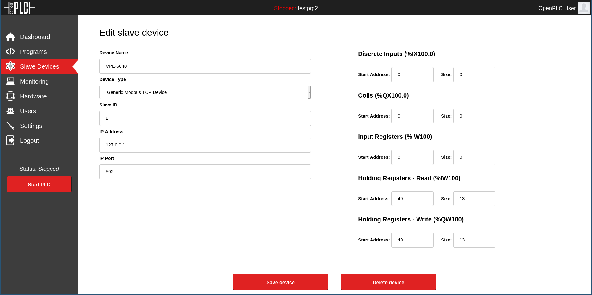
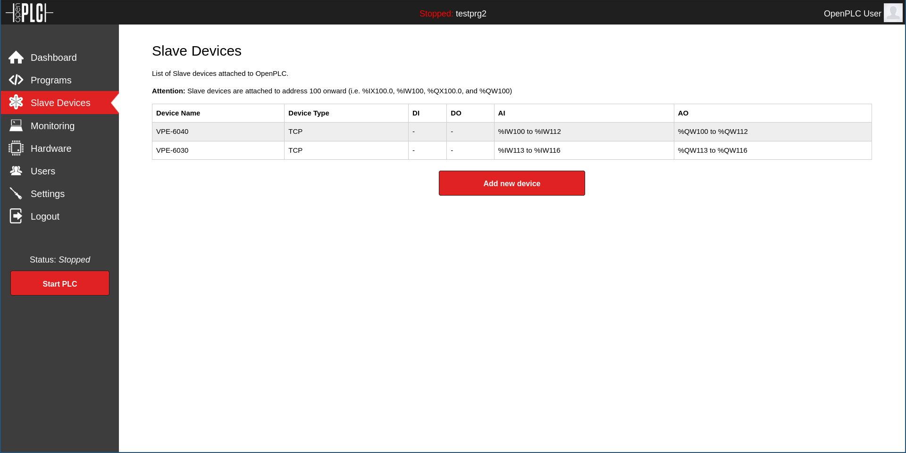

Application Note: WL-MIO-AN-30400
WL-MIO OpenPLC Application Tutorial

Overview
Since OpenPLC does not have native support for the WL-MIO hardware a Modbus TCP gateway will be used. OpenPLC applications will interact with this gateway via Modbus to read and write I/O points. To install the gateway see the Application Note WL-MIO-AN-30200
Requirements
1. OpenPLC IDE
2. WL-MIO system with a VPE-6040 Analog Input Module with ID 2 and a VPE-6030 Relay Output Module with ID 3.
3. Raspberry Pi with OpenPLC runtime installed and running.
4. Modbus TCP gateway installed and running.
Step 1
Login to the OpenPLC runtime running on the Rasbperry Pi.
Step 2
Go to the “Slave Devices” page.
Step 3
Add a new device and configure to match the screenshot.
Step 4
Add a new device and configure to match the screenshot.
Step 5
The result should look like this.
Step 6
Go to “Settings” and change the “Modbus Server Port” to something other than 502 to prevent conflicts with the Modbus TCP gateway.
Step 7
Download the rpitest.zip sample project and extract it somewhere.
Step 8
Start the OpenPLC IDE and open the sample project.
Step 9
Click “Generate program for OpenPLC Runtime”. It is the orange down arrow in the toolbar.
Step 10
Save the generated file and upload it to the runtime through the web interface. This can be done by clicking on “Programs” on the left side.
Step 11
Once the program is loaded click “Start PLC” on the left side.
Step 12
Apply more than 2.5V to the first channel of the VPE-6040 module with id 2 and the first relay should turn on.
Back to Top